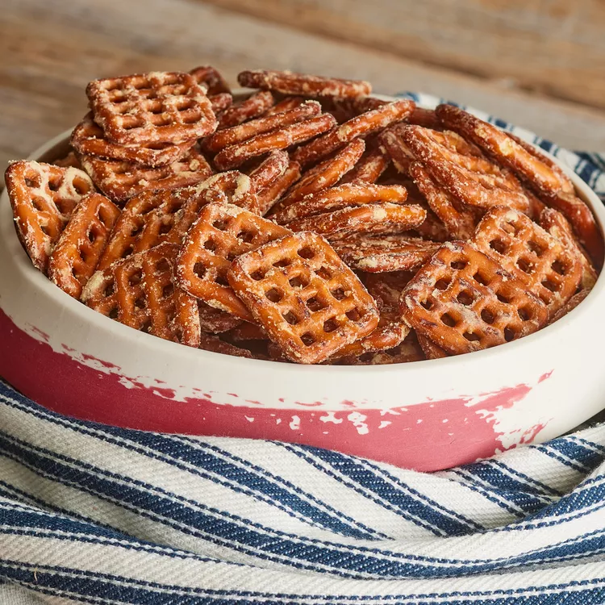

Overview
If you have a strong desire for the very tasty Dot's pretzels that have a rich flavor of buttermilk, butter, onion, garlic, and mustard, but they are not available in your area, this recipe is a good alternative. We attempted four different techniques to duplicate the buttery taste and discovered that using butter snaps pretzels is the most effective (and simplest!) method. However, if you can't obtain butter snaps pretzels, you can add 1 teaspoon of butter extract to your seasoning mix.
| Prep Time: | Bake Time: | Stand Time: |
|---|---|---|
| 5 mins | 20 mins | 5 mins |
| Total Time: | Servings: | Yield: |
| 30 mins | 8 | 8 Cups |
Directions
- Preheat the oven to 250 degrees F (120 degrees C).
- Whisk together oil, buttermilk powder, garlic powder, onion powder, dry mustard, and salt in a large bowl. Add pretzels and toss to coat evenly.
- Spread out in an even layer on a large rimmed baking sheet. Bake until toasted, about 20 minutes, stirring halfway through. Remove from oven and let cool 5 minutes before serving. Store in an airtight container at room temperature for up to 1 week.
- All done!
Recipe Credits
The recipe here was taken from AllRecipes.com: Click here for the recipe. My webste was intended to showcase HTML/CSS skills, and NOT to copy the original recipe.